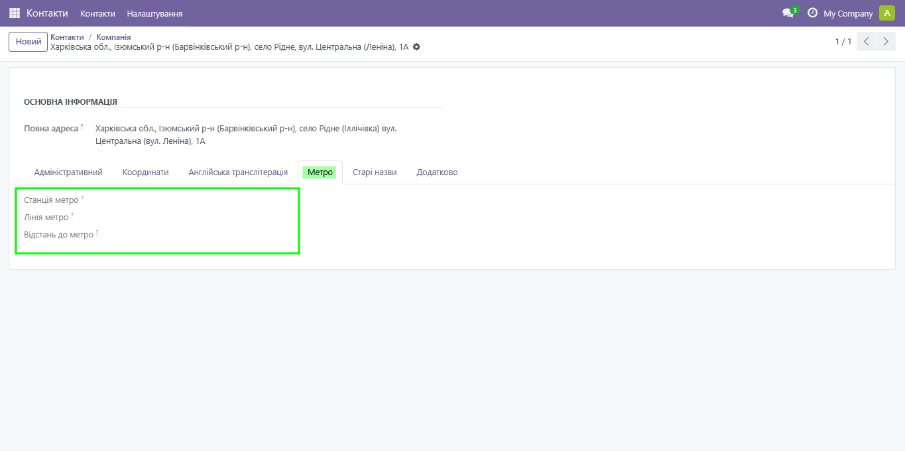
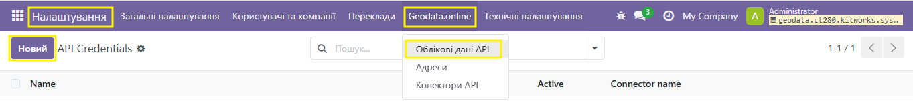

Адресний довідник України — Geodata.online
Автозаповнення, нормалізація, геокодування та зберігання українських адрес для Odoo 19 (Community). Самодостатній модуль — без зовнішніх залежностей.

Ядро інтеграції з API Geodata.online: вводьте місто → вулицю → будинок із підказок, а модуль сам нормалізує адресу, підтягує офіційні коди (КАТОТТГ/КОАТУУ), координати та формує готові адреси для документів і листів українською й англійською (транслітерація).
Власний OWL-віджет: підказки міста, вулиці й будинку прямо в адресному блоці (без майстра), із debounce, мінімальною довжиною запиту та дедуплікацією — зайвих (платних) запитів до API не робиться. Пошук працює лише для України.


Готові повні адреси для договорів і листів — українською та англійською (транслітерація). Налаштовувані шаблони формату; район і громада заповнюються автоматично з вибору адреси.
Зберігання канонічної адреси з кодами КАТОТТГ/КОАТУУ, статусом території, координатами та повним набором полів (UA + EN).
За потреби — стара назва міста/вулиці/району/громади в дужках поряд із чинною; пошук і звірка прозоро ігнорують «(стару назву)».
Для населеного пункту стара назва показується лише коли це справжнє перейменування, а не старе адміністративне підпорядкування — інакше вона не виводиться ні в полі City, ні в адресах для документів і конвертів.
Налаштовувані шаблони з готовим типовим набором: сегменти —
через кому; поточна й стара назва, що йдуть поряд
(напр. {area} {area_old}), об'єднуються в один сегмент
«поточне (стара)». Старі назви тут — завжди, а перемикач історичних назв
керує лише адресним блоком контакту. EN-версія повністю транслітерована,
включно зі старими назвами й типами.
Провайдер геокодування для base_geolocalize — без побічного
створення записів.
Щоденна перевірка (плюс кнопка «Перевірити зараз»): доступність сервера, авторизація, баланс рахунку та наявність облікових даних. Проблеми потрапляють у журнал і спливають менеджерам.
Облікові дані — глобальні або окремі на компанію; адреси, журнал запитів і сповіщення ізольовані за компаніями.
Логін/пароль і токен — лише для адміністратора; токен у параметрах
(sudo), у журналі запитів заголовок Authorization замаскований.
Автозаповнення доступне будь-якому внутрішньому користувачу через
sudo-сервіс.
Уся логіка — в одному міксині, тож підтримка нових моделей тонка:
• Контакти (res.partner)
• CRM — ліди/нагоди (crm.lead)
• Компанії (res.company)
• Кадри — приватна адреса працівника (hr.employee)
• Банки (res.bank)

Налаштування → Geodata.online → Облікові дані API → введіть логін/пароль акаунта geodata.online → Перевірити з'єднання (звіряє доступ і синхронізує області України).

Odoo 19.0 Community · Python 3.10+ · PostgreSQL · Python-пакет
requests · дійсний акаунт на
geodata.online.
© DM Solutions · geodata.online